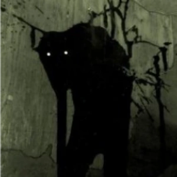

The IAP Database
"Documenting the Impossible"

Item #: IAP-054
Containment Procedures: IAP-054 is to be contained within a reinforced, soundproofed subterranean chamber
at Site-19. The chamber must be equipped with a continuous video surveillance feed and an automated biometric
monitoring system.
As standard physical barriers are entirely ineffective against IAP-054 during an active hunt, containment
is maintained primarily through Protocol "Cram Session." A rotating roster of at least four (4) civilian
or Institute-employed students currently enrolled in accredited academic institutions must be stationed
in the observation deck adjacent to IAP-054's chamber 24/7. These individuals must actively work on,
modify, or debug school assignments.
To maintain containment stability, at least two (2) of these students must be enrolled in a Web Development
curriculum, actively coding in HTML, CSS, JavaScript, or associated frameworks. Continuous keyboard input
and screen activity are monitored by Site AI; if progress ceases for more than 15 minutes, local containment
failure is considered imminent, and Class-A amnestics/caffeine stimulants are to be deployed.
Description: IAP-054 is a predatory, semi-corporeal entity standing approximately 2.4 meters tall.
Its physical manifestation is highly emaciated, possessing elongated limbs, charcoal-black skin, and an oversized,
disproportionate nasal cavity that constantly twitches. It lacks eyes, relying entirely on a highly specialized olfactory sense.
IAP-054 tracking is triggered by a specific olfactory signature emitted by human beings: the chemical and psychological
stress markers of acute academic procrastination. The entity can detect this "scent" across a radius of approximately 4,000 kilometers.
It is profoundly and anomalously attracted to the specific frustration and procrastination markers produced by students studying
Web Development (specifically those struggling with CSS Grid layout, asynchronous JavaScript, or centering a div).
When IAP-054 locks onto a target (herein designated IAP-054-A), it will breach its current containment area by intangibly phasing
through solid matter. It will manifest within the immediate vicinity of IAP-054-A, usually lurking in poorly lit corners, closets,
or just outside windows.
Upon manifestation, IAP-054 will not immediately attack. Instead, it emits a low, gravelly, distorted vocalization,
demanding to know the status of the target's pending assignment. It will then issue an ultimatum: IAP-054-A has
until 11:59 PM on Sunday night to complete and submit the assignment, or they will be entirely consumed.
During this "grace period" (typically spanning the weekend), IAP-054 will hover closely behind IAP-054-A.
It will occasionally tap on the target’s shoulder, breathe heavily on their neck, or whisper menacingly when the
target attempts to open non-academic browser tabs (e.g., YouTube, video games, social media).
If IAP-054-A successfully completes the assignment and presses "Submit," IAP-054 will emit a dissatisfied hiss,
dissolve into a cloud of black ash, and forcefully snap back into its containment chamber at Site-19. If the deadline
passes and the assignment is incomplete, IAP-054 will instantly de-manifest alongside the target; no traces of IAP-054-A
have ever been recovered.
Back to Home
WARNING
This database is only accessible to authorized personnel. If you do not have authorization to view this content, close the database now and report its distributor to the authorities. Unauthorized distribution will be prosecuted.